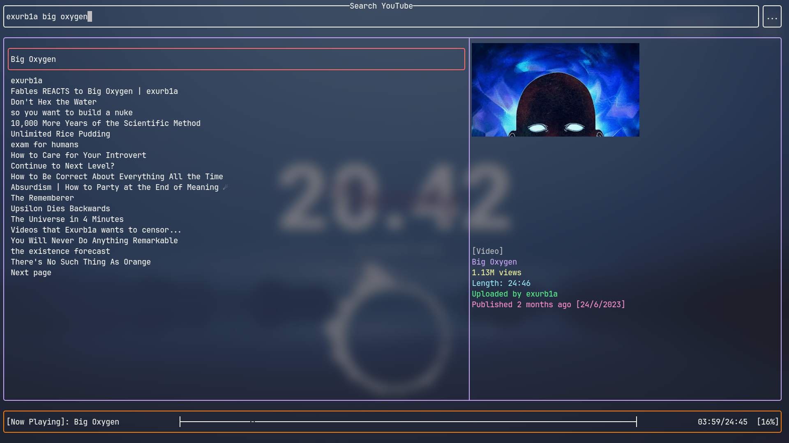
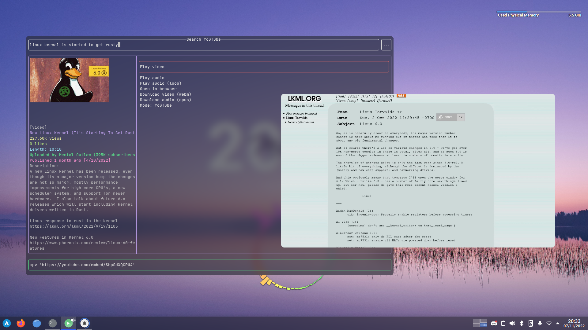
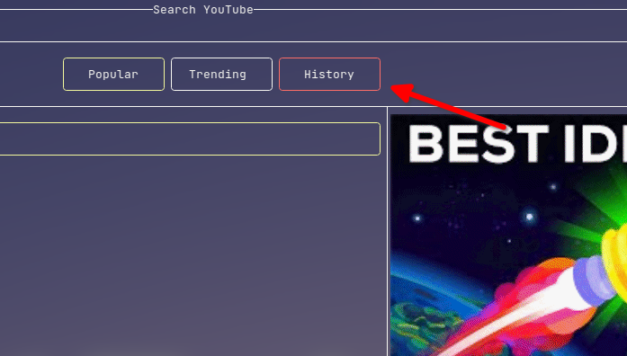
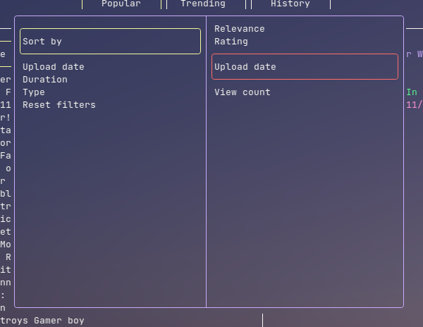

<!DOCTYPE HTML>
<html lang="en" class="sidebar-visible no-js ayu">
    <head>
        <!-- Book generated using mdBook -->
        <meta charset="UTF-8">
        <title>YouTube TUI User Manual</title>
        <meta name="robots" content="noindex" />
        <!-- Custom HTML head -->
        <meta content="text/html; charset=utf-8" http-equiv="Content-Type">
        <meta name="description" content="The user manual, documentation and contribution guide for YouTube TUI">
        <meta name="viewport" content="width=device-width, initial-scale=1">
        <meta name="theme-color" content="#ffffff" />

        <link rel="icon" href="favicon.svg">
        <link rel="shortcut icon" href="favicon.png">
        <link rel="stylesheet" href="css/variables.css">
        <link rel="stylesheet" href="css/general.css">
        <link rel="stylesheet" href="css/chrome.css">
        <link rel="stylesheet" href="css/print.css" media="print">
        <!-- Fonts -->
        <link rel="stylesheet" href="FontAwesome/css/font-awesome.css">
        <link rel="stylesheet" href="fonts/fonts.css">
        <!-- Highlight.js Stylesheets -->
        <link rel="stylesheet" href="highlight.css">
        <link rel="stylesheet" href="tomorrow-night.css">
        <link rel="stylesheet" href="ayu-highlight.css">

        <!-- Custom theme stylesheets -->
    </head>
    <body>
        <!-- Provide site root to javascript -->
        <script type="text/javascript">
            var path_to_root = "";
            var default_theme = window.matchMedia("(prefers-color-scheme: dark)").matches ? "navy" : "ayu";
        </script>

        <!-- Work around some values being stored in localStorage wrapped in quotes -->
        <script type="text/javascript">
            try {
                var theme = localStorage.getItem('mdbook-theme');
                var sidebar = localStorage.getItem('mdbook-sidebar');

                if (theme.startsWith('"') && theme.endsWith('"')) {
                    localStorage.setItem('mdbook-theme', theme.slice(1, theme.length - 1));
                }

                if (sidebar.startsWith('"') && sidebar.endsWith('"')) {
                    localStorage.setItem('mdbook-sidebar', sidebar.slice(1, sidebar.length - 1));
                }
            } catch (e) { }
        </script>

        <!-- Set the theme before any content is loaded, prevents flash -->
        <script type="text/javascript">
            var theme;
            try { theme = localStorage.getItem('mdbook-theme'); } catch(e) { }
            if (theme === null || theme === undefined) { theme = default_theme; }
            var html = document.querySelector('html');
            html.classList.remove('no-js')
            html.classList.remove('ayu')
            html.classList.add(theme);
            html.classList.add('js');
        </script>

        <!-- Hide / unhide sidebar before it is displayed -->
        <script type="text/javascript">
            var html = document.querySelector('html');
            var sidebar = 'hidden';
            if (document.body.clientWidth >= 1080) {
                try { sidebar = localStorage.getItem('mdbook-sidebar'); } catch(e) { }
                sidebar = sidebar || 'visible';
            }
            html.classList.remove('sidebar-visible');
            html.classList.add("sidebar-" + sidebar);
        </script>

        <nav id="sidebar" class="sidebar" aria-label="Table of contents">
            <div class="sidebar-scrollbox">
                <ol class="chapter"><li class="chapter-item expanded "><a href="index.html"><strong aria-hidden="true">1.</strong> Overview</a></li><li class="chapter-item expanded "><a href="installation.html"><strong aria-hidden="true">2.</strong> Installation</a></li><li class="chapter-item expanded "><a href="basic_usage.html"><strong aria-hidden="true">3.</strong> Basic usage</a></li><li class="chapter-item expanded affix "><li class="part-title">Customisation guide</li><li class="chapter-item expanded "><a href="config/index.html"><strong aria-hidden="true">4.</strong> Config files</a></li><li><ol class="section"><li class="chapter-item expanded "><a href="config/main.html"><strong aria-hidden="true">4.1.</strong> main</a></li><li class="chapter-item expanded "><a href="config/commands.html"><strong aria-hidden="true">4.2.</strong> commands</a></li><li class="chapter-item expanded "><a href="config/keybindings.html"><strong aria-hidden="true">4.3.</strong> keybindings</a></li><li class="chapter-item expanded "><a href="config/pages.html"><strong aria-hidden="true">4.4.</strong> pages</a></li><li class="chapter-item expanded "><a href="config/appearance.html"><strong aria-hidden="true">4.5.</strong> appearance</a></li><li class="chapter-item expanded "><a href="config/search.html"><strong aria-hidden="true">4.6.</strong> search</a></li></ol></li><li class="chapter-item expanded "><li class="part-title">Contributing</li><li class="chapter-item expanded "><div><strong aria-hidden="true">5.</strong> How it works</div></li><li><ol class="section"><li class="chapter-item expanded "><div><strong aria-hidden="true">5.1.</strong> Framework</div></li><li class="chapter-item expanded "><div><strong aria-hidden="true">5.2.</strong> Invidious API</div></li><li class="chapter-item expanded "><div><strong aria-hidden="true">5.3.</strong> Individual items</div></li></ol></li><li class="chapter-item expanded "><div><strong aria-hidden="true">6.</strong> Contribution guide</div></li><li class="chapter-item expanded "><a href="changelogs.html"><strong aria-hidden="true">7.</strong> Changelogs</a></li><li class="chapter-item expanded "><a href="contributors.html"><strong aria-hidden="true">8.</strong> Contributors</a></li></ol>
            </div>
            <div id="sidebar-resize-handle" class="sidebar-resize-handle"></div>
        </nav>

        <div id="page-wrapper" class="page-wrapper">

            <div class="page">
                <div id="menu-bar-hover-placeholder"></div>
                <div id="menu-bar" class="menu-bar sticky bordered">
                    <div class="left-buttons">
                        <button id="sidebar-toggle" class="icon-button" type="button" title="Toggle Table of Contents" aria-label="Toggle Table of Contents" aria-controls="sidebar">
                            <i class="fa fa-bars"></i>
                        </button>
                        <button id="theme-toggle" class="icon-button" type="button" title="Change theme" aria-label="Change theme" aria-haspopup="true" aria-expanded="false" aria-controls="theme-list">
                            <i class="fa fa-paint-brush"></i>
                        </button>
                        <ul id="theme-list" class="theme-popup" aria-label="Themes" role="menu">
                            <li role="none"><button role="menuitem" class="theme" id="light">Light</button></li>
                            <li role="none"><button role="menuitem" class="theme" id="rust">Rust</button></li>
                            <li role="none"><button role="menuitem" class="theme" id="coal">Coal</button></li>
                            <li role="none"><button role="menuitem" class="theme" id="navy">Navy</button></li>
                            <li role="none"><button role="menuitem" class="theme" id="ayu">Ayu (default)</button></li>
                        </ul>
                        <button id="search-toggle" class="icon-button" type="button" title="Search. (Shortkey: s)" aria-label="Toggle Searchbar" aria-expanded="false" aria-keyshortcuts="S" aria-controls="searchbar">
                            <i class="fa fa-search"></i>
                        </button>
                    </div>

                    <h1 class="menu-title">YouTube TUI User Manual</h1>

                    <div class="right-buttons">
                        <a href="print.html" title="Print this book" aria-label="Print this book">
                            <i id="print-button" class="fa fa-print"></i>
                        </a>
                        <a href="https://github.com/siriusmart/youtube-tui/tree/master/docs" title="Git repository" aria-label="Git repository">
                            <i id="git-repository-button" class="fa fa-github"></i>
                        </a>
                    </div>
                </div>

                <div id="search-wrapper" class="hidden">
                    <form id="searchbar-outer" class="searchbar-outer">
                        <input type="search" id="searchbar" name="searchbar" placeholder="Search this book ..." aria-controls="searchresults-outer" aria-describedby="searchresults-header">
                    </form>
                    <div id="searchresults-outer" class="searchresults-outer hidden">
                        <div id="searchresults-header" class="searchresults-header"></div>
                        <ul id="searchresults">
                        </ul>
                    </div>
                </div>
                <!-- Apply ARIA attributes after the sidebar and the sidebar toggle button are added to the DOM -->
                <script type="text/javascript">
                    document.getElementById('sidebar-toggle').setAttribute('aria-expanded', sidebar === 'visible');
                    document.getElementById('sidebar').setAttribute('aria-hidden', sidebar !== 'visible');
                    Array.from(document.querySelectorAll('#sidebar a')).forEach(function(link) {
                        link.setAttribute('tabIndex', sidebar === 'visible' ? 0 : -1);
                    });
                </script>

                <div id="content" class="content">
                    <main>
                        <h1 id="overview"><a class="header" href="#overview">Overview</a></h1>
<p>Written in Rust, the <strong>YouTube TUI</strong> is a lightweight and user friendly TUI for browsing YouTube content from the terminal.</p>
<p></p>
<p>It is like an <em>app launcher</em>, it launches other programs to do the heavy lifting (for example, <code>mpv</code> for playing videos).</p>
<h2 id="customisable"><a class="header" href="#customisable">Customisable</a></h2>
<p>The YouTube TUI can be customised through config files, they are located in <code>~/.config/youtube-tui</code> and are in the YAML format.</p>
<p>Here's an example of the config file:</p>
<pre><code class="language-yaml">invidious_instance: https://vid.puffyan.us
max_watch_history: 50
allow_unicode: false
images: Sixels
refresh_after_modifying_search_filters: true
provider: YouTube
env:
  browser: firefox
  video-player: mpv
  youtube-downloader: yt-dlp
  terminal-emulator: konsole -e

</code></pre>
<p>Anything from layouts to colours and keybindings can be customised, more on that later.</p>
<h2 id="dependency-free"><a class="header" href="#dependency-free">Dependency-free</a></h2>
<p>The YouTube TUI does not work on its own, it is instead like a <em>TUI frontend</em> for programs like <code>mpv</code> or <code>yt-dlp</code>/<code>youtube-dl</code>.</p>
<p>However, the programs to launch can be changed, and therefore the YouTube TUI <u>does not rely on any specific dependencies</u> to run.</p>
<p></p>
<h2 id="powerful"><a class="header" href="#powerful">Powerful</a></h2>
<p>The YouTube TUI allows you to browse YouTube with (almost) all of it's features, functions including:</p>
<ul>
<li>View popular/trending videos</li>
<li>View information about channels, playlists and videos</li>
<li>Use search filters to sort and filter search results</li>
<li>Save browsing history</li>
</ul>
<h3 id="what-it-doesnt-have"><a class="header" href="#what-it-doesnt-have">What it doesn't have</a></h3>
<ul>
<li>Vim-like commands (first priority)</li>
<li>Channel search (will implement)</li>
<li>Channel videos sorting (will implement)</li>
<li>Subscriptions (will implement)</li>
<li>Recommendations/comments (probably will not implement)</li>
</ul>
<h2 id="how-to-contribute"><a class="header" href="#how-to-contribute">How to contribute</a></h2>
<p>You will need a <u>general knowledge</u> of the Rust programming language, and the ability to <em>understand my spaghetti</em>.</p>
<ol>
<li>Open an issue to make sure nobody else is working on the same feature</li>
<li>Write code</li>
<li>Open a pull request</li>
<li>Get merged?</li>
</ol>
<p>Or just <em>fix that typo in README</em> -_-</p>
<div style="break-before: page; page-break-before: always;"></div><h1 id="installation"><a class="header" href="#installation">Installation</a></h1>
<p>It's about download (or building) the binary and putting them in an easily accessible location (like <code>/bin/</code>).</p>
<h2 id="install-from-cratesio-recommended"><a class="header" href="#install-from-cratesio-recommended">Install from Crates.io (recommended)</a></h2>
<p>Crates.io is a repository for programs written in Rust, and the YouTube TUI is avaliable <a href="https://crates.io/crates/youtube-tui" target=_blank><em>there</em></a>.</p>
<p>To install using this method, you will need <code>rustc</code> and <code>cargo</code> present. <a href="https://www.rust-lang.org/tools/install" target=_blank><em>Here</em></a>'s a tutorial on how to get them.</p>
<p>Now, run the following command:</p>
<pre><code class="language-sh">cargo install youtube-tui
</code></pre>
<blockquote>
<p>To check and update all programs installed from Crates.io, you can use CLI tools like <a href="https://crates.io/crates/cargo-update" target=_blank><em>cargo-update</em></a>.</p>
</blockquote>
<h2 id="aur-for-arch-linux-recommended"><a class="header" href="#aur-for-arch-linux-recommended">AUR for Arch Linux (recommended)</a></h2>
<p>The YouTube TUI is avaliable in the AUR <a href="https://aur.archlinux.org/packages/youtube-tui-git" target=_blank><em>here</em></a>.</p>
<p>Use an <a href="https://aur.archlinux.org" target=_blank>AUR</a> helper like <a href="https://aur.archlinux.org/packages/yay" target=_blank><code>yay</code></a> to install.</p>
<pre><code class="language-sh">yay -S youtube-tui # replace `yay` with your AUR helper
</code></pre>
<h2 id="download-a-compiled-binary"><a class="header" href="#download-a-compiled-binary">Download a compiled binary</a></h2>
<p>Download the compiled binary for your system from <a href="https://github.com/Siriusmart/youtube-tui/releases" target=_blank><em>GitHub releases</em></a> and manually place it in <em>a folder</em> (e.g. <code>~/.cargo/bin/</code> or <code>/bin/</code>)</p>
<h2 id="build-from-source"><a class="header" href="#build-from-source">Build from source</a></h2>
<p>Use the <code>cargo</code> command:</p>
<pre><code class="language-sh">cargo install --git https://github.com/siriusmart/youtube-tui
</code></pre>
<h3 id="confirm-youtube-tui-has-been-installed"><a class="header" href="#confirm-youtube-tui-has-been-installed">Confirm YouTube TUI has been installed</a></h3>
<p>Run the following command in terminal:</p>
<pre><code class="language-sh">youtube-tui
</code></pre>
<p>If installed correctly, a TUI should be launched. Press <code>q</code> to close the TUI.</p>
<div style="break-before: page; page-break-before: always;"></div><h1 id="basic-usage"><a class="header" href="#basic-usage">Basic usage</a></h1>
<p>Here is a basic how-to guide on the TUI.</p>
<h2 id="cursor"><a class="header" href="#cursor">Cursor</a></h2>
<p>The <em>cursor</em> can be moved using arrow keys, or Vim keybindings (hjkl).</p>
<p></p>
<p>The item with the cursor hovering will have a <u>red outline</u>.</p>
<blockquote>
<p>Everything here refers to the <em>latest default config</em>, including the keybindings.</p>
</blockquote>
<div class="table-wrapper"><table><thead><tr><th>Function</th><th>Key(s)</th></tr></thead><tbody>
<tr><td>Select</td><td>Enter</td></tr>
<tr><td>Deselect</td><td>Esc</td></tr>
<tr><td>Cursor up</td><td>Up arrow / <code>k</code></td></tr>
<tr><td>Cursor down</td><td>Down arrow / <code>j</code></td></tr>
<tr><td>Cursor left</td><td>Left arrow / <code>h</code></td></tr>
<tr><td>Cursor right</td><td>Right arrow / <code>l</code></td></tr>
<tr><td>Previous page</td><td>Backspace / Alt + Left arrow</td></tr>
<tr><td>First page history</td><td>Home</td></tr>
<tr><td>Clear page history</td><td>End</td></tr>
<tr><td>Quit</td><td><code>q</code></td></tr>
</tbody></table>
</div>
<h2 id="selection"><a class="header" href="#selection">Selection</a></h2>
<p>Selecting an item allows you to move the cursor within that item, to select an item, press <code>Enter</code>.</p>
<p>When nothing is selected, you can move the cursor between items, to deselect from an item, hit <code>Esc</code>.</p>
<h2 id="searching"><a class="header" href="#searching">Searching</a></h2>
<p>Type the search query when the search bar and press <code>Enter</code>, use arrow keys to move the cursor around.</p>
<p>To apply search filters, select the button with 3 dots (<code>...</code>) to the right of the search bar, hit enter to start modifying and enter again to save. Pressing <code>Esc</code> should reload the current search page to apply the filters.</p>
<p></p>
<h2 id="playing-videos-and-playlists"><a class="header" href="#playing-videos-and-playlists">Playing videos and playlists</a></h2>
<blockquote>
<p>This part assumes that you use <code>mpv</code> as your video player, <code>konsole</code> as your terminal emulator, <code>yt-dlp</code> as your YouTube video downloader, and <code>firefox</code> as your browser.</p>
<p>If that is not the case, you can learn how to change that in the <em>custom commands</em> section.</p>
</blockquote>
<p>Press <code>Enter</code> to select a video or playlist from any lists, then move the cursor to the <em>bottom item</em> where you can play, download and open the webpage in browser.</p>
<h3 id="playlist-views"><a class="header" href="#playlist-views">Playlist views</a></h3>
<p>The playlist page allows two different view modes, the first of which is <em>commands view</em> - similar to what the video page offers.</p>
<p>The other one is <em>videos view</em>, which allows you to look at each videos in the playlist individually.</p>
<h2 id="buttons"><a class="header" href="#buttons">Buttons</a></h2>
<p>Buttons have no use on their own, but allows you to navigate between pages.</p>
<div style="break-before: page; page-break-before: always;"></div><h1 id="config-files"><a class="header" href="#config-files">Config files</a></h1>
<p>Config files are located in <code>~/.config/youtube-tui</code>, modifying them changes the behavior of the TUI accordingly.</p>
<p>Config files will be generated if not present, backed up and regenerated if there is an issue reading it (most likely caused by changes made by user or updates).</p>
<p>In the following sections we will go through all config files including:</p>
<ul>
<li><a href="config/./main.html"><code>main.yml</code></a></li>
<li><a href="config/./commands.html"><code>commands.yml</code></a></li>
<li><a href="config/./keybindings.html"><code>keybindings.yml</code></a></li>
<li><a href="config/./pages.html"><code>pages.yml</code></a></li>
<li><a href="config/./appearance.html"><code>appearance.yml</code></a></li>
<li><code>search.yml</code></li>
</ul>
<div style="break-before: page; page-break-before: always;"></div><h1 id="the-main-config"><a class="header" href="#the-main-config">The main config</a></h1>
<p>The main config file is located in <code>~/.config/youtube-tui/main.yml</code>.</p>
<h2 id="example-mainyml"><a class="header" href="#example-mainyml">Example main.yml</a></h2>
<pre><code class="language-yaml">invidious_instance: https://vid.puffyan.us
max_watch_history: 50
allow_unicode: false
message_bar_default: All good :)
images: Sixels
refresh_after_modifying_search_filters: true
image_index: 4
provider: YouTube
env:
  browser: firefox
  terminal-emulator: konsole -e
  youtube-downloader: yt-dlp
  video-player: mpv
</code></pre>
<hr>
<p>Below are the description of each of the fields:</p>
<h3 id="invidious_instance"><a class="header" href="#invidious_instance">invidious_instance</a></h3>
<p>The Invidious instance you want to use, a full list of Invidious instances can be found here <a href="https://api.invidious.io" target=_blank><em>here</em></a>.</p>
<p><em>Accept: string of a valid url to an Invidious instance</em></p>
<h3 id="max_watch_history"><a class="header" href="#max_watch_history">max_watch_history</a></h3>
<p>The maximum length that the watch history can hold, a value higher will record more items, but will also result in a larger file size in storage.</p>
<p><em>Accept: positive integer below 2<sup><em>your CPU architecture</em></sup> - 1</em></p>
<h3 id="allow_unicode"><a class="header" href="#allow_unicode">allow_unicode</a></h3>
<p>Enable unicode in video and playlist names, doing so may cause unwanted behaviors like video name continuing into the info field to the right.</p>
<p><em>Accept: <code>true</code>/<code>false</code></em></p>
<h3 id="message_bar_default"><a class="header" href="#message_bar_default">message_bar_default</a></h3>
<p>The default message displayed in the message bar.</p>
<p><em>Accept: any string</em></p>
<h3 id="images"><a class="header" href="#images">images</a></h3>
<p>How to display thumbnails, if <code>None</code> is selected video thumbnails will not be downloaded in the first place.</p>
<p><em>Accept: <code>Sixels</code>/<code>HalfBlocks</code>/<code>None</code></em></p>
<h3 id="refresh_after_modifying_search_filters"><a class="header" href="#refresh_after_modifying_search_filters">refresh_after_modifying_search_filters</a></h3>
<p>Whether to refresh the current search page after search filters are modified</p>
<p><em>Accept: <code>true</code>/<code>false</code></em></p>
<h3 id="image_index"><a class="header" href="#image_index">image_index</a></h3>
<p>The index in the array of thumbnail qualities you want to download</p>
<p>Typically these are the avaliable qualities:</p>
<div class="table-wrapper"><table><thead><tr><th>Index</th><th>Label</th><th>Resolution</th></tr></thead><tbody>
<tr><td>0</td><td>maxres</td><td>1280 x 720</td></tr>
<tr><td>1</td><td>maxresdefault</td><td>1280 x 720</td></tr>
<tr><td>2</td><td>sddefault</td><td>640 x 480</td></tr>
<tr><td>3</td><td>high</td><td>480 x 360</td></tr>
<tr><td>4</td><td>medium</td><td>320 x 180</td></tr>
<tr><td>5</td><td>default</td><td>120 x 90</td></tr>
<tr><td>6</td><td>start</td><td>120 x 90</td></tr>
<tr><td>7</td><td>middle</td><td>120 x 90</td></tr>
<tr><td>8</td><td>end</td><td>120 x 90</td></tr>
</tbody></table>
</div>
<p>Usually you don't want to use the max resolution as it will create a large gap between the page being loaded and before the thumbnails are started to get displayed</p>
<p><em>Accept: integer that is a valid index</em></p>
<h3 id="provider"><a class="header" href="#provider">Provider</a></h3>
<p>This changes the <code>${url}</code> and <code>${embed_url}</code> of videos, allowing you to watch videos from Invidious if it is restricted on YouTube.</p>
<p>(Don't always use Invidious if YouTube is working, because first of all the load time if gonna be much slower, and secondly you will be DDoSing Invidious)</p>
<p><em>Accept: <code>YouTube</code>/<code>Invidious</code></em></p>
<h3 id="env"><a class="header" href="#env">env</a></h3>
<p>Env are variables that can be used in <code>commands.yml</code>, this allows you to change multiple commands by modifying just one env variable. And not to be confused with system/terminal environment variables, these are just <em>&quot;a thing&quot;</em> that you can use in the TUI.</p>
<p><em>Accept: <code>string_key: string_value</code> pairs</em></p>
<div style="break-before: page; page-break-before: always;"></div><h1 id="commands-config"><a class="header" href="#commands-config">Commands config</a></h1>
<p>The commands config file decides what options (that will run a certain command on select) to be display in the <em>video</em> and <em>playlist</em> page respectively, it is located in <code>~/.config/youtube-tui/commands.yml</code>.</p>
<h2 id="example-commands-config"><a class="header" href="#example-commands-config">Example commands config</a></h2>
<pre><code class="language-yaml">video:
- Play video: ${video-player} ${embed-url}
- Play audio: ${terminal-emulator} ${video-player} ${embed-url} --no-video
- Open in browser: ${browser} ${url}
- Download video (webm): ${terminal-emulator} ${youtube-downloader} -o ${download-path} ${embed-url}
- 'Mode: ${provider}': '%switch-provider%'

playlist:
- Switch view: '%switch-view%'
- Play all videos: ${video-player} ${all-videos}
- Play all audio: ${terminal-emulator} ${video-player} ${all-videos} --no-video
- Shuffle play all audio: ${terminal-emulator} ${video-player} ${all-videos} --no-video --shuffle
- Open in browser: ${browser} ${url}
- Download all video (webm): ${terminal-emulator} ${youtube-downloader} -o ${download-path} ${all-videos}
- 'Mode: ${provider}': '%switch-provider%'
</code></pre>
<h2 id="env-variables"><a class="header" href="#env-variables">Env variables</a></h2>
<p>Notice that a lot of the commands contains the <code>${label}</code> pattern, this actually replaces the text with the env variables set in <code>main.yml</code>, or is added by the current page (video or playlist) on-the-go.</p>
<p>Replacing all these with known values it might look something like this:</p>
<pre><code class="language-yaml">video:
- Play video: mpv 'https://youtube.com/embed/dQw4w9WgXcQ'
- Play audio: konsole -e mpv 'https://youtube.com/embed/dQw4w9WgXcQ' --no-video
- Open in browser: firefox 'https://youtu.be/dQw4w9WgXcQ'
- Download video (webm): konsole -e yt-dlp -o '~/Downloads/%(title)s-%(id)s.%(ext)s' 'https://youtube.com/embed/dQw4w9WgXcQ'
- 'Mode: ${provider}': '%switch-provider%'

playlist:
- Switch view: '%switch-view%'
- Play all videos: mpv 'https://youtube.com/embed/Z8oiddSsB6I' 'https://youtube.com/embed/yiS0DPekSDQ' 'https://youtube.com/embed/YhM8GYuDFps' # and much more...
- Play all audio: konsole -e mpv 'https://youtube.com/embed/Z8oiddSsB6I' 'https://youtube.com/embed/yiS0DPekSDQ' 'https://youtube.com/embed/YhM8GYuDFps' --no-video
- Shuffle play all audio: konsole -e mpv 'https://youtube.com/embed/Z8oiddSsB6I' 'https://youtube.com/embed/yiS0DPekSDQ' 'https://youtube.com/embed/YhM8GYuDFps' --no-video --shuffle
- Open in browser: firefox 'https://www.youtube.com/playlist?list=PLdgHTasZAjYZlCXN9rTcX9LFOQ-RIrzCs'
- Download all video (webm): konsole -e yt-dlp -o '~/Downloads/%(title)s-%(id)s.%(ext)s' 'https://youtube.com/embed/Z8oiddSsB6I' 'https://youtube.com/embed/yiS0DPekSDQ' 'https://youtube.com/embed/YhM8GYuDFps'
- 'Mode: ${provider}': '%switch-provider%'
</code></pre>
<h2 id="item-commands"><a class="header" href="#item-commands">Item commands</a></h2>
<p>(will be replaced by global vim-like commands in the next major version)</p>
<p>Notice that there is another pattern in the commands, it is the <code>%label%</code> commands. They are special cases that are consumed by the item and is never actually ran as a system command.</p>
<p>For instance <code>%switch-provider%</code> toggles the provider between <code>YouTube</code> and <code>Invidious</code>.</p>
<hr>
<p>Below are the description of each of the fields:</p>
<h3 id="video"><a class="header" href="#video">video</a></h3>
<p>Commands to be displayed in a video page.</p>
<p><em>Accept: <code>string_label: string_command</code> pairs</em></p>
<h3 id="playlist"><a class="header" href="#playlist">playlist</a></h3>
<p>Commands to be displayed in a playlist page (commands view).</p>
<p><em>Accept: <code>string_label: string_command</code> pairs</em></p>
<h2 id="env-reference"><a class="header" href="#env-reference">Env reference</a></h2>
<p>Does not include custom env set in <code>main.yml</code>.</p>
<div class="table-wrapper"><table><thead><tr><th>Name</th><th>Page</th><th>Value</th></tr></thead><tbody>
<tr><td><code>url</code></td><td>video &amp; playlist</td><td>String url to the web page</td></tr>
<tr><td><code>embed-url</code></td><td>video</td><td>String url to the embed video (required to play video using mpv from Invidious)</td></tr>
<tr><td><code>all-videos</code></td><td>playlist</td><td>String url<em><strong>s</strong></em> separated by space to all embed videos in a playlist</td></tr>
<tr><td><code>provider</code></td><td>video &amp; playlist</td><td>To display the current provider, is the only env that can be displayed in the label, and can only be used when <code>%switch-provider%</code> is the command</td></tr>
</tbody></table>
</div>
<h2 id="item-command-reference"><a class="header" href="#item-command-reference">Item command reference</a></h2>
<div class="table-wrapper"><table><thead><tr><th>Name</th><th>Page</th><th>Use</th></tr></thead><tbody>
<tr><td><code>swtich-provider</code></td><td>video &amp; playlist</td><td>Toggles the provider between <code>YouTube</code> and <code>Invidious</code></td></tr>
</tbody></table>
</div><div style="break-before: page; page-break-before: always;"></div><h1 id="keybindings-config"><a class="header" href="#keybindings-config">Keybindings config</a></h1>
<p>The keybindings config binds each key to an action, or multiple keys for the same action. It can be found in <code>~/.config/youtube-tui/keybindings.yml</code>.</p>
<h2 id="example-keybindings-config"><a class="header" href="#example-keybindings-config">Example keybindings config</a></h2>
<pre><code class="language-yaml">Up:
  0: MoveUp
Down:
  0: MoveDown
Right:
  0: MoveRight
Left:
  0: MoveLeft
  4: Back
Esc:
  0: Deselect
Backspace:
  0: Back
Enter:
  0: Select
</code></pre>
<h2 id="keys"><a class="header" href="#keys">Keys</a></h2>
<p>Keys are the name of the keys that are pressed in the keyboard, all keys are avaliable <a href="https://docs.rs/crossterm/latest/crossterm/event/enum.KeyCode.html" target=_blank><em>here</em></a>.</p>
<h2 id="key-modifiers"><a class="header" href="#key-modifiers">Key modifiers</a></h2>
<p>Key modifiers are the modifier keys that are pressed along with the actual key, for instance in <code>Ctrl + C</code> would have the modifier <code>Ctrl</code> and the key <code>C</code>.</p>
<p>Each modifier has its own code, for instance <code>Shift</code> would be <code>1</code> and <code>Ctrl</code> would be <code>2</code>. The final modifier will be the <u>sum</u> of all modifier keys. (<code>Ctrl + Shift</code> would be a <code>3</code>).</p>
<h3 id="keys-reference"><a class="header" href="#keys-reference">Keys reference</a></h3>
<p>All possible keys can be found <a href="https://docs.rs/crossterm/latest/crossterm/event/enum.KeyCode.html" target=_blank><em>here</em></a>.</p>
<blockquote>
<p>Enums are represented using the character <code>!</code>, for example the <code>q</code> key would be <code>!Char 'q'</code></p>
<p><code>Shift + Q</code> however would be <code>!Char 'Q'</code> with <code>0</code> as modifier code as <code>Shift</code> turns <code>q</code> into an upper case character.</p>
</blockquote>
<h3 id="modifiers-reference"><a class="header" href="#modifiers-reference">Modifiers reference</a></h3>
<div class="table-wrapper"><table><thead><tr><th>Modifier</th><th>Code</th></tr></thead><tbody>
<tr><td>None</td><td><code>0</code></td></tr>
<tr><td><code>Shift</code></td><td><code>1</code></td></tr>
<tr><td><code>Ctrl</code></td><td><code>2</code></td></tr>
<tr><td><code>Alt</code></td><td><code>4</code></td></tr>
<tr><td><code>Super</code>/&quot;Windows&quot; key</td><td><code>8</code></td></tr>
<tr><td><code>Hyper</code></td><td><code>16</code></td></tr>
<tr><td><code>Meta</code></td><td><code>32</code></td></tr>
</tbody></table>
</div>
<p>All key modifiers (if any are added) will be in <a href="https://docs.rs/crossterm/latest/crossterm/event/struct.KeyModifiers.html" target=_blank><em>the code</em></a>.</p>
<div style="break-before: page; page-break-before: always;"></div><h1 id="layout-config"><a class="header" href="#layout-config">Layout config</a></h1>
<p>The layout config determins the position of where each item is placed, mainly their order. The config file can be found in <code>~/.config/youtube-tui/pages.yml</code>.</p>
<h2 id="example-layout-config"><a class="header" href="#example-layout-config">Example layout config</a></h2>
<pre><code class="language-yaml">main_menu:
  layout:
  - !NonCenteredRow
    - SearchBar
    - SearchFilters
  - !CenteredRow
    - Popular
    - Trending
    - History
  - !NonCenteredRow
    - ItemList
  - !NonCenteredRow
    - MessageBar
  message: Loading main menu...

# and much more ...
</code></pre>
<h2 id="items"><a class="header" href="#items">Items</a></h2>
<p>Each item is an individual &quot;thing&quot;, these things can be optionally selectable, or hoverable by the cursor.</p>
<h2 id="rows"><a class="header" href="#rows">Rows</a></h2>
<p>A row is a horizontal row of items, it can be either centered (like the buttons) or non centered (which will align to the left).</p>
<blockquote>
<p>Non centered rows are faster and less crash prone compared to centered rows.</p>
</blockquote>
<p>Each item are ordered from left to right.</p>
<h2 id="message"><a class="header" href="#message">Message</a></h2>
<p>The message to display when loading the page.</p>
<h3 id="items-reference"><a class="header" href="#items-reference">Items reference</a></h3>
<div class="table-wrapper"><table><thead><tr><th>Item</th><th>Can be used in page</th><th>Description</th></tr></thead><tbody>
<tr><td>MessageBar</td><td>Any</td><td>The panel (default in the bottom of every page) that displays message and error messages</td></tr>
<tr><td>SearchBar</td><td>Any</td><td>A text field that searches that entered query</td></tr>
<tr><td>SearchFilters</td><td>Any</td><td>A button that brings up a popup for modifying search filters</td></tr>
<tr><td>Trending</td><td>Any</td><td>Loads the trending page</td></tr>
<tr><td>Popular</td><td>Any</td><td>Loads the popular page</td></tr>
<tr><td>History</td><td>Any</td><td>Loads the watch history page</td></tr>
<tr><td>ItemList</td><td>Main menu/search</td><td>Display multiple videos, channels, or playlists in a list</td></tr>
<tr><td>SingleItemInfo</td><td>Single item</td><td>Display info of one single item (a single video or playlist)</td></tr>
<tr><td>ChannelDisplay</td><td>Channel display</td><td>Display information of a channel, depending on the page</td></tr>
<tr><td>ChannelMain</td><td>Channel display</td><td>Loads the main channel page</td></tr>
<tr><td>ChannelVideos</td><td>Channel display</td><td>Loads the channel videos page</td></tr>
<tr><td>ChannelPlaylists</td><td>Channel display</td><td>Loads the channel playlists page</td></tr>
</tbody></table>
</div><div style="break-before: page; page-break-before: always;"></div><h1 id="appearance-config"><a class="header" href="#appearance-config">Appearance config</a></h1>
<p>Appearance config controls the colours and the &quot;looks and feel&quot; of the TUI, it is located in <code>~/.config/youtube-tui/appearance.yml</code>.</p>
<h2 id="example-appearance-config"><a class="header" href="#example-appearance-config">Example appearance config</a></h2>
<pre><code class="language-yaml">borders: Rounded
colors:
  text: Reset
  text_special: Reset
  text_secondary: Reset
  text_error: LightRed
  outline: Reset
  outline_selected: LightBlue
  outline_hover: LightRed
  outline_secondary: LightYellow
  message_outline: !Rgb # todo: represent colours with hex values or `rgb(r,g,b)`
  - 255
  - 127
  - 0
  message_error_outline: LightRed
  message_success_outline: LightGreen
  item_info:
    tag: Gray
    title: LightBlue
    description: Gray
    author: LightGreen
    viewcount: LightYellow
    length: LightCyan
    published: LightMagenta
    video_count: !Rgb
    - 131
    - 141
    - 255
    sub_count: !Rgb
    - 101
    - 255
    - 186
    likes: !Rgb
    - 200
    - 255
    - 129
    genre: !Rgb
    - 255
    - 121
    - 215
</code></pre>
<hr>
<p>Below are the description of each of the fields:</p>
<h3 id="borders"><a class="header" href="#borders">borders</a></h3>
<p>The style of the borders/outline, if outdated view <a href="https://docs.rs/tui/latest/tui/widgets/enum.BorderType.html" target=_blank><em>here</em></a>.</p>
<p><em>Accept: <code>Plain</code>/<code>Rounded</code>/<code>Double</code>/<code>Thick</code></em></p>
<h3 id="literally-everything-else"><a class="header" href="#literally-everything-else">Literally everything else</a></h3>
<p>Any colours, here are the 2 main represenations of colours, for more check out this page <a href="https://docs.rs/tui/latest/tui/style/enum.Color.html" target=_blank><em>here</em></a>.</p>
<h4 id="terminal-colour"><a class="header" href="#terminal-colour">Terminal colour</a></h4>
<p>This can be modified by the themes of your terminal.</p>
<h4 id="rgb"><a class="header" href="#rgb">RGB</a></h4>
<p>RGB colour values, requires TrueColour support in terminal (for instance Windows CMD cannot display RBG colours).</p>
<blockquote>
<p>Hex colour values to be implemented.</p>
</blockquote>
<div style="break-before: page; page-break-before: always;"></div><h1 id="default-search-options"><a class="header" href="#default-search-options">Default search options</a></h1>
<p>The default search query/filters when launching the TUI, this can be found in <code>~/.config/youtube-tui/search.yml</code>, but should not be &quot;customised&quot; like how you would to a config file because it's just a configurable default value.</p>
<h2 id="example-search-default-value"><a class="header" href="#example-search-default-value">Example search default value</a></h2>
<pre><code class="language-yaml">query: ''
filters:
  sort: Relevance
  date: None
  duration: None
  type: All
</code></pre>
<hr>
<p>Below are the description of each field</p>
<h3 id="query"><a class="header" href="#query">query</a></h3>
<p>The default query when you launch the TUI.</p>
<p><em>Accept: any string</em></p>
<h3 id="sort"><a class="header" href="#sort">Sort</a></h3>
<p>How the search results are sorted.</p>
<p><em>Accept: <code>Relevance</code>/<code>Rating</code>/<code>Date</code>/<code>Views</code></em></p>
<div style="break-before: page; page-break-before: always;"></div><h1 id="changelogs"><a class="header" href="#changelogs">Changelogs</a></h1>
<h2 id="v050"><a class="header" href="#v050">v0.5.0</a></h2>
<h4 id="added"><a class="header" href="#added">Added</a></h4>
<ul>
<li>Entire TUI rewritten from scratch, now using the <a href="https://crates.io/crates/tui-additions" target=_blank><code>tui-additions</code></a> crate</li>
<li>Sixels image support</li>
<li>Improved config files</li>
</ul>
<h2 id="v044"><a class="header" href="#v044">v0.4.4</a></h2>
<h4 id="added-1"><a class="header" href="#added-1">Added</a></h4>
<ul>
<li>Added default select item for each page (can be changed in <code>layouts.yml</code>)</li>
</ul>
<h4 id="fixes"><a class="header" href="#fixes">Fixes</a></h4>
<ul>
<li>Video list view in playlists not working</li>
<li>Channel view scroll causes panic</li>
<li>Search options gray backgound + image covering popup</li>
</ul>
<h3 id="v043"><a class="header" href="#v043">v0.4.3</a></h3>
<h4 id="added-2"><a class="header" href="#added-2">Added</a></h4>
<ul>
<li>Refreshing page</li>
<li>Key modifiers for key bindings</li>
<li>Image loading can be disabled</li>
</ul>
<h4 id="fixes-1"><a class="header" href="#fixes-1">Fixes</a></h4>
<ul>
<li>Fixed cache not being cleared after exit</li>
</ul>
<div style="break-before: page; page-break-before: always;"></div><h1 id="contributors"><a class="header" href="#contributors">Contributors</a></h1>
<h2 id="siriusmart"><a class="header" href="#siriusmart"><a href="https://github.com/siriusmart" target=_blank>Siriusmart</a></a></h2>
<p>Creator and main developer of YouTube TUI.</p>
<h2 id="zaedus"><a class="header" href="#zaedus"><a href="https://github.com/zaedus" target=_blank>Zaedus</a></a></h2>
<p>Made the PKGBUILD and maintainer of the <code>youtube-tui-git</code> package on <a href="https://aur.archlinux.org/packages/youtube-tui-git" target=_blank>the AUR</a>.</p>
<h2 id="fractal-tess"><a class="header" href="#fractal-tess"><a href="https://github.com/fractal-tess" target=_blank>Fractal Tess</a></a></h2>
<p>Fixed typos in README.</p>

                    </main>

                    <nav class="nav-wrapper" aria-label="Page navigation">
                        <!-- Mobile navigation buttons -->
                        <div style="clear: both"></div>
                    </nav>
                </div>
            </div>

            <nav class="nav-wide-wrapper" aria-label="Page navigation">
            </nav>

        </div>

        <script type="text/javascript">
            window.playground_copyable = true;
        </script>
        <script src="elasticlunr.min.js" type="text/javascript" charset="utf-8"></script>
        <script src="mark.min.js" type="text/javascript" charset="utf-8"></script>
        <script src="searcher.js" type="text/javascript" charset="utf-8"></script>
        <script src="clipboard.min.js" type="text/javascript" charset="utf-8"></script>
        <script src="highlight.js" type="text/javascript" charset="utf-8"></script>
        <script src="book.js" type="text/javascript" charset="utf-8"></script>

        <!-- Custom JS scripts -->
        <script type="text/javascript">
        window.addEventListener('load', function() {
            window.setTimeout(window.print, 100);
        });
        </script>
    </body>
</html>
